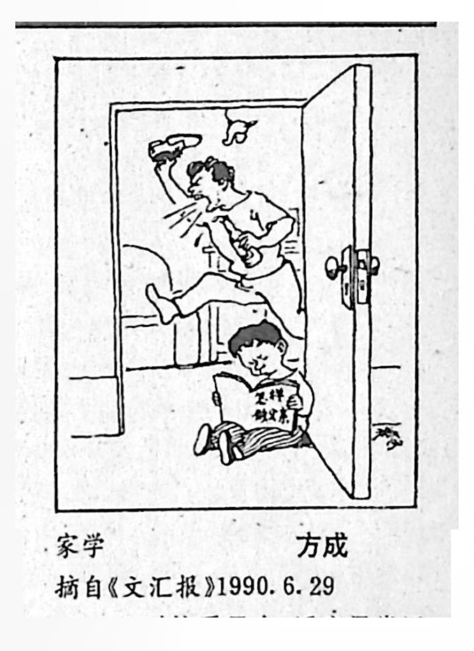

方成 《人事》1990年第7期（总第58期），第39页（原载《文汇报》）
家学
Family Learning
- Text in the drawing
- 怎样做父亲
How to Be a Father - Description
- In the doorway a drunken father, bottle in hand, kicks out and flings a shoe, while his small son sits calmly on the floor in front of him reading a book titled “How to Be a Father.”
- Note
- 家学, “family learning,” normally means scholarship handed down in a family. Fang Cheng (1918–2018) was one of China's best-known satirical cartoonists.
- Artist
- Fang Cheng 方成
- Reprinted from
- 《文汇报》 — Wenhui bao (Wenhui Daily)
- Published in
- 《人事》1990年第7期（总第58期）, p. 39
- Themes
- Everyday life (not about personnel work)

Cite
Fang Cheng, “家学” [Family Learning], Renshi (Personnel) 《人事》, 1990, no. 7, p. 39.